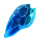
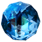
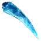
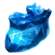

Ключ Альказаара
Предметы / Ключи
Открыть в интерактивной вики →
| Вес | 1 |
|---|---|
| Цена | 0 |
Описание
Позволяет попасть к  Вальдарог.
Вальдарог.
Ключ можно создать добыв 5 элементов в Зале Альказаара
Можно получить во время различных игровых ивентов, также есть шанс получить за выполнение задания у Кимерул-Маг либо выполнив ежедневное задание "Зерно Хаоса" у
Кимерул-Маг либо выполнив ежедневное задание "Зерно Хаоса" у  Варник (но награда меняется)
Варник (но награда меняется)
Вальдарог. Ключ можно создать добыв 5 элементов в Зале Альказаара
Можно получить во время различных игровых ивентов, также есть шанс получить за выполнение задания у
Кимерул-Маг либо выполнив ежедневное задание "Зерно Хаоса" у Варник (но награда меняется)| Ключ, которым можно вскрыть печать Алказаара и добраться до Вальдарога. |
Рецепт
Создание: 1x  Драконье Дыхание + 1x
Драконье Дыхание + 1x

Драконьи Клыки + 1x
Драконий глаз + 1xДраконье Дыхание + 1x 
Драконий Коготь + 1x
Драконье СердцеПрименение
|
Способы получения
|